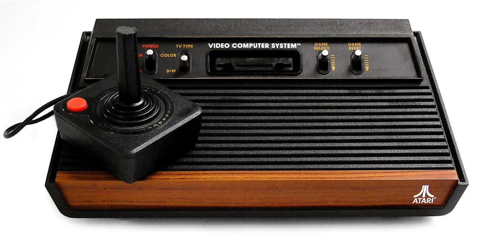

")
")


아다 lee
아다 lee
철원하고 서울이 서라벌에서 유례했다는게 생각나네
바둑 아다리가 단수였나
울 아부지는 내 돌 하나 사방으로 에워싸서 내 돌 빼가면서 아다리~ 하셨었는데 그뒤로 바둑 접음
ㅋㅋㅋㅋㅋㅋㅋㅋㅋㅋ 나와 같은 추억을 공유하는구나!
저 디자인 볼수록 예쁜듯. 물론 그당시 가격이면 그래야겠지만
아랏다리
아타리마에다
그럼 용접 아다리는 또 다른 어원일라나
그것도 같은 거예요.
아다 맞다
아다라시
아타리가 맞다
바둑 아다리는 일본 바둑에서 쓰던거 그대로 쓰시는 분 일부 있었는데 지금은 거의 단수라고 하지
그리고 아다리나 ATARI나 어원이 같다는 거지 같은 뜻이라고 표현하는 건 어폐가 있다
아다리네 아다리야
저 아타리가 일본어에서나온건 첨알았네
난 일본어 같아서 일본회사라 생각했는데 미국회사인거 지금 처음 알았음
당시 게임 시장은 자체는 미국이 더 컸지만 게임 개발 능력은 일본이 더 커서 미국은 일본뽕이 장난 아니었어
아다 Lee
아다